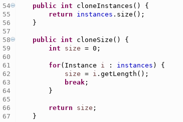
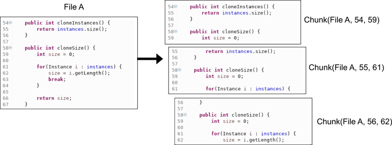
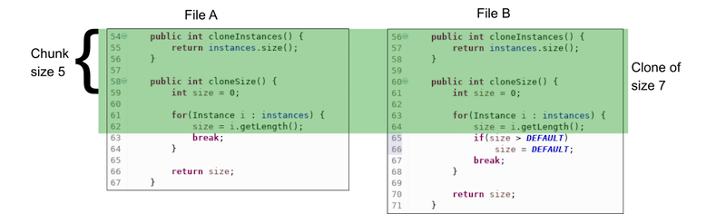

Sprint: The Clone Wars
Table of Contents
1 About This Sprint
This sprint introduces a text-based clone detection algorithm and ClonyMcCloneface, a simple clone detector.
2 User Stories covered in this Sprint
- As a developer I want to understand the principle ideas of code clone detection.
- As a developer I want to quickly identify code clones in a small code base (<100 files).
- As a developer I want to be able to estimate the size of input data for an analysis task.
3 Introduction
3.1 Clone detection 101
In the assignment outline you have seen what a code clone is. Here we introduce a simple clone detection algorithm on which ClonyMcCloneface is based. The idea is simple: if we find one or more lines of code that are exactly the same, we have found a clone. Clones of size 1 are however quite uninteresting and much too common. The figure below contains 3 clones of size 1 (in lines 56, 64 and 67). Not very useful.

The idea is therefore to look at chunks of code instead of individual lines of code. A source code file is split up into chunks of size N, where N is the number of lines a chunk contains. If a file contains M lines of code, the number of chunks in a file is M-N+1. The figure below illustrates the idea.

The chunks shown on the left side are of size 5. We identify a chunk by its filename, and its beginning and ending line. Note that empty lines (lines 57, 60 and 65) do not contribute to chunk size. Now, to identify a clone, we compare chunks, instead of lines. This will identify clones with a minimum of size N (5 in our example above).
There is one problem, though: we will detect clones of chunk size N and only of N, i.e. no larger clones. In order to find larger clones, we need to expand the initially detected clones of size N. The figure below illustrates the idea.

If we compare Chunk(File A, 54, 59) with Chunk(File B, 56, 61), we have a match. To expand this clone, we check if the next chunks in each file [Chunk(File A, 55, 61) and Chunk(File B, 57, 63)] are equivalent. Since they are, we continue this process until the chunks don’t match anymore [Chunk(File A, 58, 63) and Chunk(File B, 60, 65)] and stop the expansion. We end up with a clone of size 7 as indicated in the figure above.
To summarize, the algorithm consists of the following steps:
- Read in the source code and remove code comments, and whitespace that changes only the code layout.
- Split up each file into chunks of size N and store the chunks in a list.
- Iterate over the list of chunks and compare each chunk with each other chunk.
- If equivalent chunks are found, expand the clone to identify the largest common number of equivalent chunks.
3.2 ClonyMcCloneface
We have implemented the algorithm described in the previous section in a clone detector called ClonyMcCloneface (name reference). You’ll use and expand ClonyMcCloneface throughout this assignment. In this sprint, you are required to complete the tasks listed in Experiential Learning. You know you are done with this sprint when you pass the Acceptance Tests.
4 Experiential Learning
The version of ClonyMcCloneface used in this sprint implements the ideas presented in the introduction. Your task is to complete some of the missing code, run the detector on different data sets and report on the observed results.
4.1 Setup your development environment
You should conduct all development within a Virtualbox environment. This allows us to provide you support in case something is not working and you can keep your computer clutter free.
- If you did not complete Sprint Getting Started with Virtualization, now it’s a good time.
- Get this Vagrantfile and read the provision section to understand what will be installed where.
- Setup your development environment using vagrant.
- Login into the VM and install the development environment of your choice. We suggest you to use eclipse, but note that you cannot install the version provided by Ubuntu (3.8) since that one does not support Java 8. You need to install eclipse 4.6 (Neon) manually (here are some instructions).
- Bonus task: adapt the Vagrantfile to install your favorite IDE (eclipse, netbeans, emacs, …) so you don’t have to do it manually in case you want to trash the VM.
Checkpoint questions
- According to the directives in the vagrant file, which software packages are installed?
- Where is the Qualitas corpus installed?
4.2 Get ClonyMcCloneface
- Download the version for ClonyMcCloneface for this sprint.
$ wget ftp://custsrv1.bth.se/FTP/ClonyMcCloneface/The-Clone-Wars.tar.gz
- Unpack the archive (it contains an eclipse project file, so you can import it directly into eclipse), open it in your IDE and start exploring the code.
Checkpoint questions
- Which class contains the
mainmethod?
4.3 Complete the implementation
The objective of this activity is to familiarize yourself with the code in ClonyMcCloneface. If you run the unit tests, you will notice that some of them fail. Indeed, some of the code is incomplete. Your task is to find all locations marked with a TODO comment, implement the missing code (using what you have learned about the clone detection algorithm in the Introduction), and make all unit tests pass.
Checkpoint questions
- Which data structure is used to store
Cloneobjects? - Why do you think that particular data structure was chosen?
4.4 Run the clone detection on a small data set
The provisioning of your development environment with vagrant has also installed the Qualitas corpus that contains the source code of 112 software systems. Take some time to explore the systems (see checkpoint questions).
Then, run the ClonyMcCloneface on the ant sytsem. The main method in class NaiveDetector expects two arguments:
- The directory that contains the to-be-analysed source code
- The chunk size
Open the file that contains the reported clones and check that the identified clones are indeed duplicated code fragments. If you completed the previous task, the output of ClonyMcCloneface should look like this:
Root folder: /home/mun/Qualitas/QualitasCorpus-20130901r/Systems/ant Total files/lines scanned: 1196/128219 Clones of size 20 or larger found: 47 Largest clone: 213 ###Clone size: 213### File: /home/mun/Qualitas/QualitasCorpus-20130901r/Systems/ant/ant-1.8.4/src/apache-ant-1.8.4/src/main/org/apache/tools/ant/taskdefs/optional/net/FTPTaskMirrorImpl.java | 86-298 File: /home/mun/Qualitas/QualitasCorpus-20130901r/Systems/ant/ant-1.8.4/src/apache-ant-1.8.4/src/main/org/apache/tools/ant/taskdefs/optional/net/FTP.java | 185-397 ###Clone size: 167### File: /home/mun/Qualitas/QualitasCorpus-20130901r/Systems/ant/ant-1.8.4/src/apache-ant-1.8.4/src/main/org/apache/tools/ant/taskdefs/optional/net/FTP.java | 505-671 File: /home/mun/Qualitas/QualitasCorpus-20130901r/Systems/ant/ant-1.8.4/src/apache-ant-1.8.4/src/main/org/apache/tools/ant/taskdefs/optional/net/FTPTaskMirrorImpl.java | 406-572 ###Clone size: 158### File: /home/mun/Qualitas/QualitasCorpus-20130901r/Systems/ant/ant-1.8.4/src/apache-ant-1.8.4/src/main/org/apache/tools/ant/taskdefs/optional/net/FTPTaskMirrorImpl.java | 655-812 File: /home/mun/Qualitas/QualitasCorpus-20130901r/Systems/ant/ant-1.8.4/src/apache-ant-1.8.4/src/main/org/apache/tools/ant/taskdefs/optional/net/FTP.java | 753-910
Checkpoint questions
- How many files does the Qualitas corpus contain?
- How many of them are Java files?
- How much space do the Java files occupy on disk?
- How did you solve the malformed input problem (
MalformedInputExceptionis thrown when reading in some of the corpus files)?
4.5 Run the clone detection on a large data set
Now run ClonyMcCloneface on the complete Qualitas corpus.
Checkpoint questions
- What happens here compared to the analysis of a smaller data set?
- If the analysis fails, why?
- Briefly discuss potential improvements to the detection algorithm and/or the used data structures.
4.6 Update Sprint Test Plan
Go through the user stories for this sprint and make sure you have a clear understanding of how to solve each of them.
Revisit and update your risks and contingencies section.
4.7 Update Course Backlog
- Inspect the identified clones. Which ones would you try to eliminate? Which ones are harmless?
Where do you go from here? Are there any questions that you want answered? Add them, along with a brief strategy for how to find an answer.